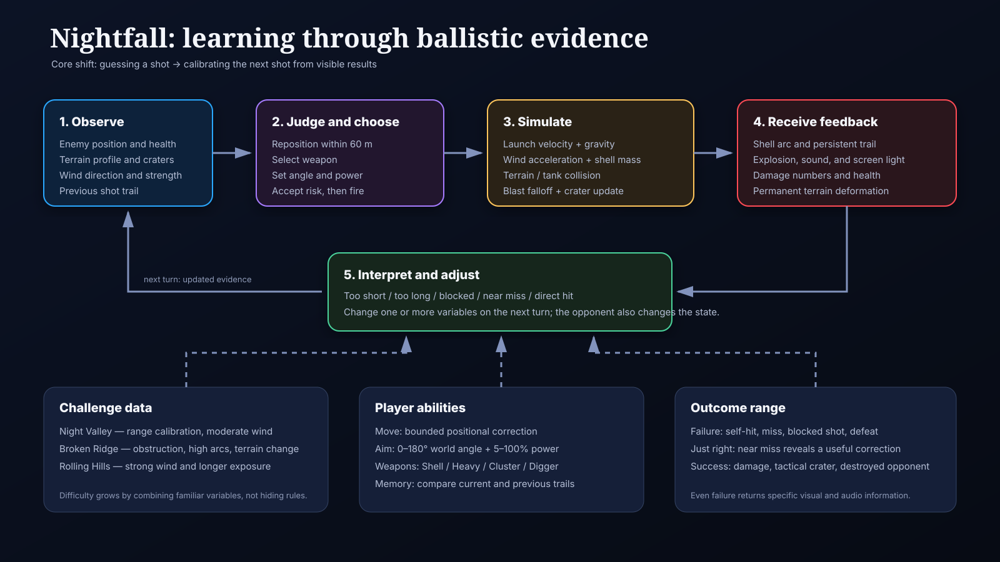

Inside a Game
Playing reflection, emotional situation, learning loop, feedback, challenge space, and transfer into the prototype.
Read Session 1 →GAME ONE · THREE-SESSION SUBMISSION
Nightfall is a local turn-based artillery duel about observation, judgment, commitment, and correction. Wind, terrain, movement, and the previous trajectory turn every miss into usable evidence.
THE IDEA
The player cannot know the perfect shot immediately. They read the opponent, slope, wind, and earlier trails; choose angle, power, position, and weapon; then commit. The result changes both their understanding and the physical terrain.
Core learning shift: from guessing a shot to deliberately calibrating the next shot from visible evidence.
COMPLETE COURSE PATH
Playing reflection, emotional situation, learning loop, feedback, challenge space, and transfer into the prototype.
Read Session 1 →Original brief, system graph, variables, feedback translation, challenge progression, and documented concept drift.
Read Session 2 →Playable game, chronological development log, process evidence, testing, limitations, and public repository.
Read Session 3 →SYSTEM GRAPH

PROGRESSIVE CHALLENGES
Moderate wind and elevated starts establish angle, power, and visible shot evidence.
A central barrier asks for high arcs, movement, weapon choice, or terrain alteration.
Open ground and stronger wind make flight time and horizontal drift decisive.